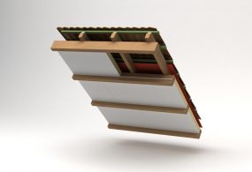
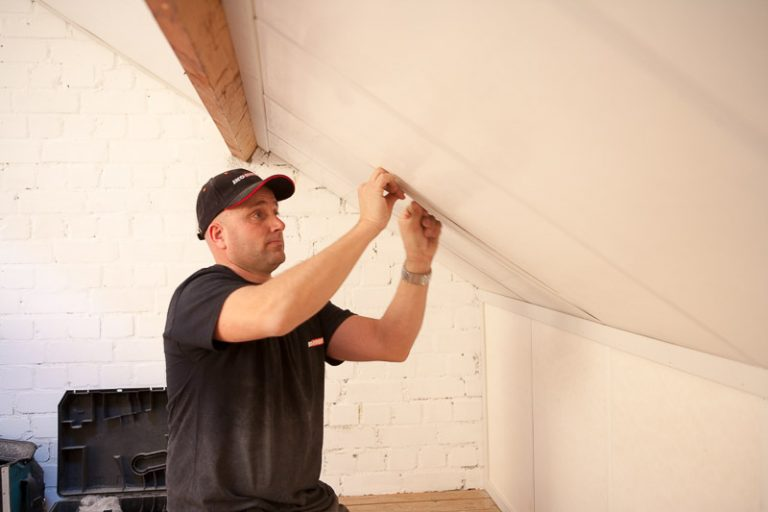

Dakisolatie van IKO Enertherm
IKO enertherm comfort finish ALU WHITE is de perfecte oplossing voor zolderisolatie met een afwerkingslaag.
Voordelen
Aan één zijde voorzien van een egale witte afwerkingslaag.
Met witte afwerkingsstrips tussen de naden voor een afgewerkte zolder.
Zeer snelle plaatsing dankzij handig formaat en licht gewicht.
Vochtongevoelig, onvervormbaar en stootvast.
Met witte magnesiumoxide plaat met anti-bacteriële eigenschappen: rotvrij, schimmelwerend.
Geluiddempende eigenschappen.
Overschilderbaar.
IKO enertherm ALU WHITE
IKO enertherm ALU FINISH is een 100 % CFK’s, HCFK’s of HFK’s -vrije isolatieplaat met een kern uit hard polyisocyanuraat schuim, bekleed aan beide zijden met een meerlaags gasdicht aluminium complex.Afgewerkt met een 3mm onbrandbaar en milieuvriendelijke magnesium oxide plaat met antibacteriële eigenschappen: rotvrij, vochtongevoelig, brandwerend, geluiddempend. Overschilderbaar.
Randafwerking
| Tand en groef (TG) |
Technische goedkeuringen
Nederland: Komo Attest met Productiecertificaat CTG 485 Komo CTG 544Europa: CE – EN 13165: T2-DS(70,90)3-DS(-20,-)1-DLT (2)-TR80-CS(10Y)175-WL(T)1
België: ATG 2726 – ATG 2727 – ATG H867
Frankrijk: Certificat Acermi N° 06/103/434 DTA 5/13-2350
Duitsland: Bauaufsichtliche Zulassung Z 23.15-161
USA: FM Factory Mutual
Brandeigenschappen
– Brandklasse volgens EN 13501-1: Klasse E– Brandklasse Magnesium oxide plaat volgens EN 13501-1: Klasse A1
– Brandklasse volgens KB 19/12/1997: A1 (België)
Technische gegevens
Volumegewicht: ± 32 kg/m3Gesloten cellen: meer dan 95%
Waterdampdiffusieweerstand PIR schuim: mu = 60 – ALU-cachering: mu > 100.000

Vergelijken
Dak
Platdakisolatie IKO EnerthermGeluid
Binnenwandsysteem HV70 Van FaayEco-Baffles Van VRK
Geluidisolatie Isolgomma Van Imbema
Gevel
BuitenisolatiegevelHoutvezelisolatie Van Gutex
Isolatie Isovlas PL Plaat
Spouwisolatie HR++ Neopixels EPS Parels
Glas
Glasfolie van HomechillHR++ Isolatieglas
Renovatieglas en Kozijnen
Vloer
Bodem afsluiting KalkkorrelsReflectiefolie Tonzon